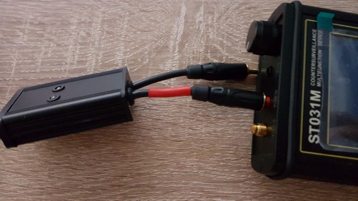
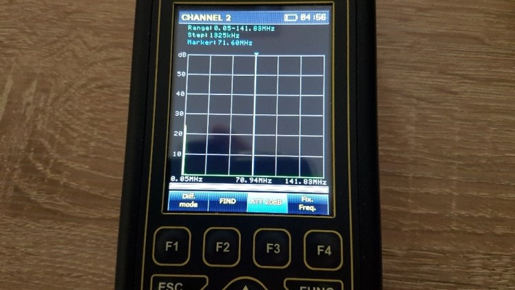
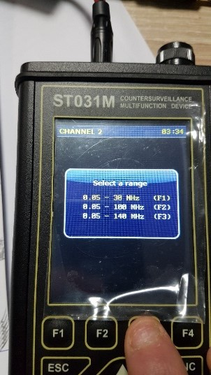
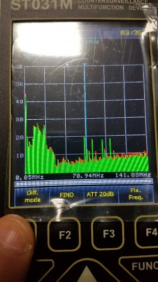
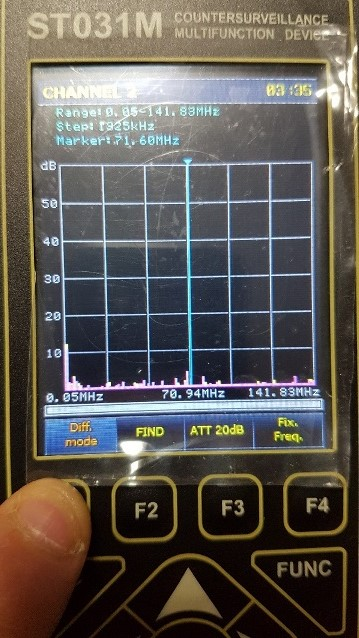
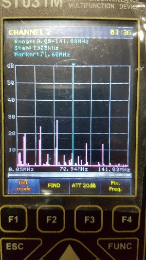
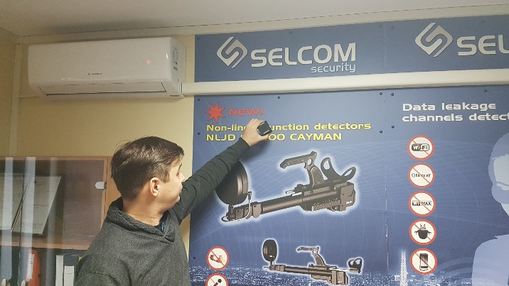
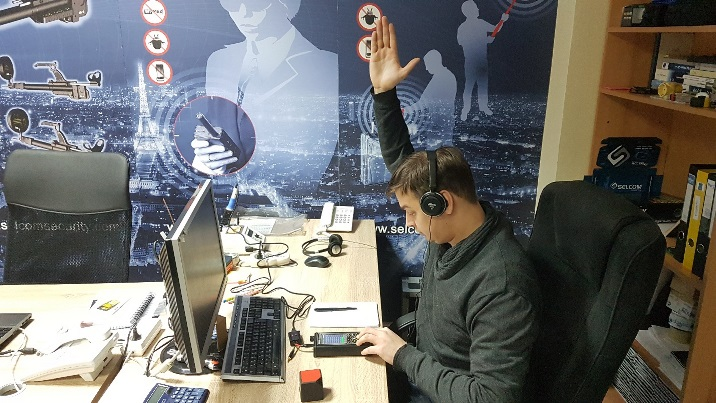
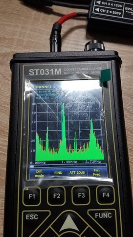
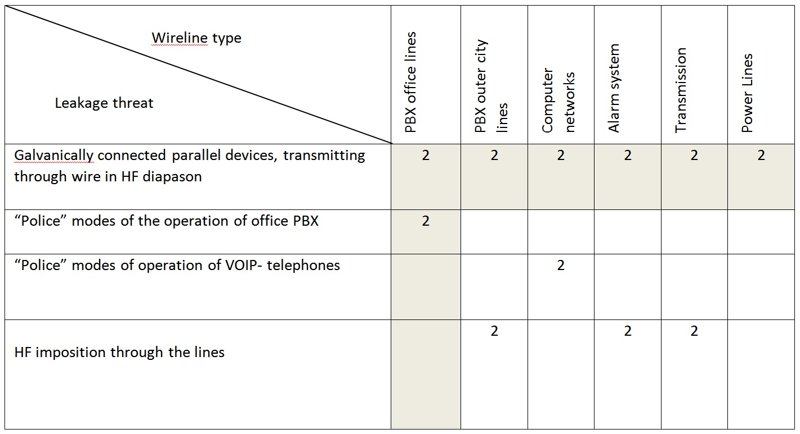

")
Test of capabilities of ST-031M Piranha part 2
Test of CHANNEL 2 of ST-031M”Piranha”.
Connect the BLWC connector using the RED connector to the RED socket of the device as shown on the picture below:

Please note that the device must switched off, while doing so. And when working with CHANNEL 2, device must be turned off from the 220V power supply.
Then press ENTER and select 2nd Channel
Part one (F1) – 0, 05 – 30 MHz
Part two (F2) – 0, 05 – 100 MHz
Part three (F3) – 0, 05 – 140 MHz
It is necessary to have in view that different 220V electricity sockets will give out different readings, such as quantity of signals received.
After we select the necessary part of the received spectrum we press ENTER (in this case we choose 0, 05 – 140 MHz)
By pressing ENTER we enter the main screen of the selected channel on the screen. On the screen we see, the following:
-TIME
-Battery charge
-Channel Name
-Range
-Step (signifies how fast the operator can scan the diapason manually)
-Marker (shows the exact frequency)
-Diff. Mode (F1)
-FIND (F2)
-ATT 20 dB (F3)
-Fix. Frequency (F4)
Differential Mode of the scanning receiver.
This mode means that by pressing F1 button, device selects all signals received by the device and sets them as 0 threshold. And when the powerful new signal appears, it will be shown in different color (in our case the color will be Yellow).
In fixed frequency mode, the screen will look like this:
By pressing arrows left and right the operator can adjust to a more specific frequency he is looking for, or to receive a better sound. And in oscilloscope mode, we have the opportunity to distinguish between radio signal and digital signal.
Attenuator 20dB – is designed to provide a better opportunity for the operator to work, when there is a lot of noise(interferences) in the circuit.

For operative use of the CHANNEL 2 of the device, the operator can switch in to Automatic detection mode by pressing F2.
After switching in to automatic mode, device will scan for all available signals in the mains of 220V. And give out a table. Please see picture below:
Also please note that if in case when you are conducting a sweep device must be switched off from the electric socket.
Next the operator must analyze all received signals one by one. By using Buttons F2, F3, F4 the operator can:
F2 – change the status between Unknown/ Safe / Dangerous
F3 – Analysis of the selected signal frequency.
F4 – Modulation change (Frequency / Amplitude )
Analysis of the signal in Channel 2 of the device ST-031M”Piranha”.
By pressing F3 in the automatic mode of the device ST-031M”Piranha”.
F1- change of modulation
F2- Oscilloscope
F3- Save changes ( this option is necessary when the operator is sets up to the necessary frequency)
Explanation: If under some circumstance it is necessary to set up to a more precise frequency in Automatic mode, the operator can set using arrows situated on the device left or right.
To save the selected frequency press F3 (Save changes)
Test 1 Detection of a hidden eavesdropping device in the network adapter,connected to the mains of 220V.
1. Turn on the device.
After the device switches on in to the main window press F2
2. Select the range that you are going to work at
For this test we are going to use a full range from 5KHz till 140 MHz
3. Press F2, to start the Automatic search
4. Check all the detected signals
Pictures below will show the process
 
 
Afterwards the operator can switch in to the automatic (FIND) mode and scan all the received frequencies. As shown on the next pictures.
On the picture after pressing F2 , the table appears with the list of received frequencies.
Please note that the total sum of received signals will be different in different places. It is also important, while working with this mode, use the head phones.
For actual detection and localization of the wired microphone, two operators are necessary.
Method 1
One operator with the earphones on, is reviewing all received signals in the premise. The acoustic emitter is on and set to emit tact signal. After locating the frequency where the operator can hear those tact sounds. Another operator takes the acoustic emitter and walks along the wall. In this case when the operator working with the device hears that the sound from acoustic emitter is getting louder and clearer, he raises his hand. Informing his colleague that the device is really close.
Afterwards the operator takes non linear junction detector and inspects the area more precisely.
Please see pictures below:


Please note that if the noise in the mains is very high, use the attenuator 20 Db.
TEST 2
In this test we will try detecting a suspicious signal from the simulator ST-121.
1. Connect ST-031M“Piranha“ to the mains.
2. Turn on the signal imitator and connect it to the mains.
3. Select the CHANNEL 2 in the ST-031M“Piranha“
4. Select full range from 5KHz – 140 MHz
On the below picture you can see the detection of the suspicious signal.

Annex 1
The CHANNEL 2 of the operative multifunctional detection device ST-031M“Piranha“ can solve following problems:
Potential dangers (Wirelines)
